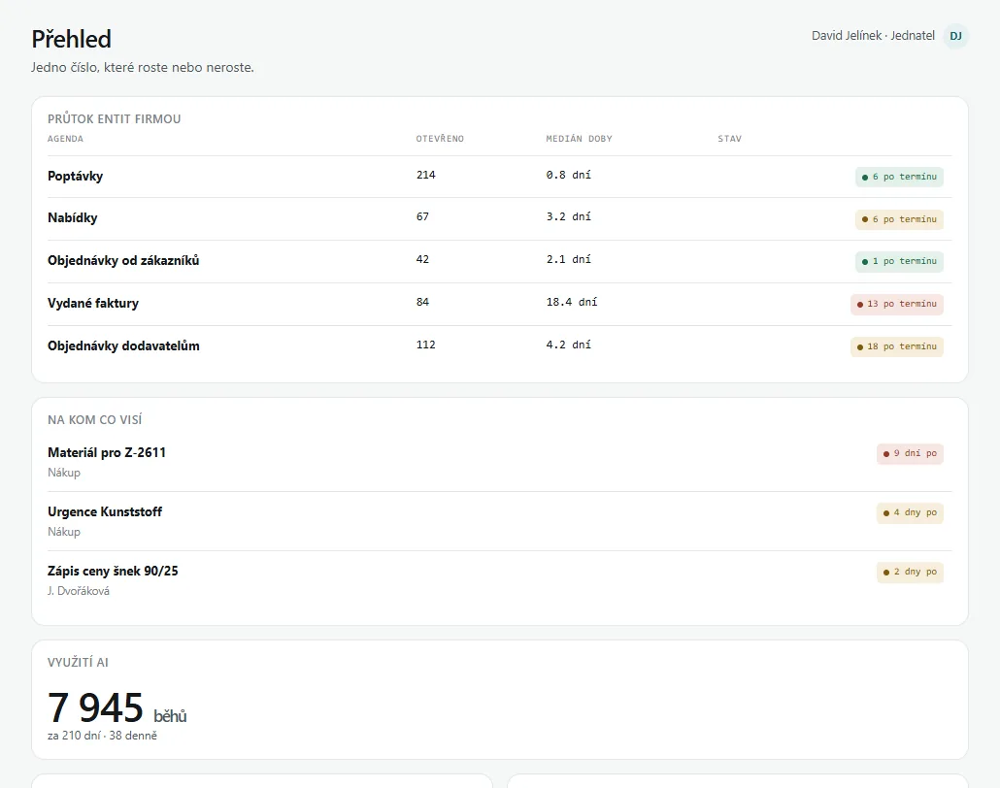
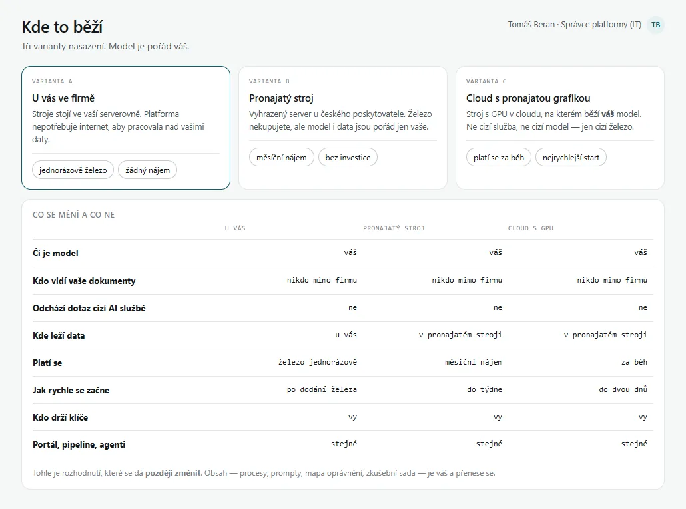
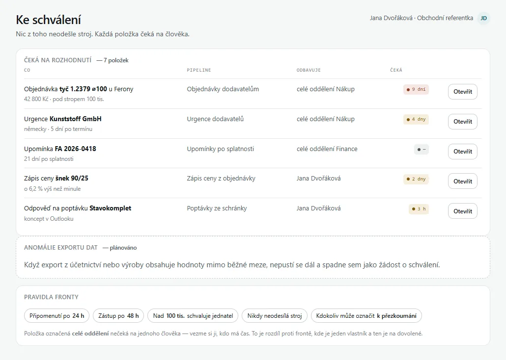
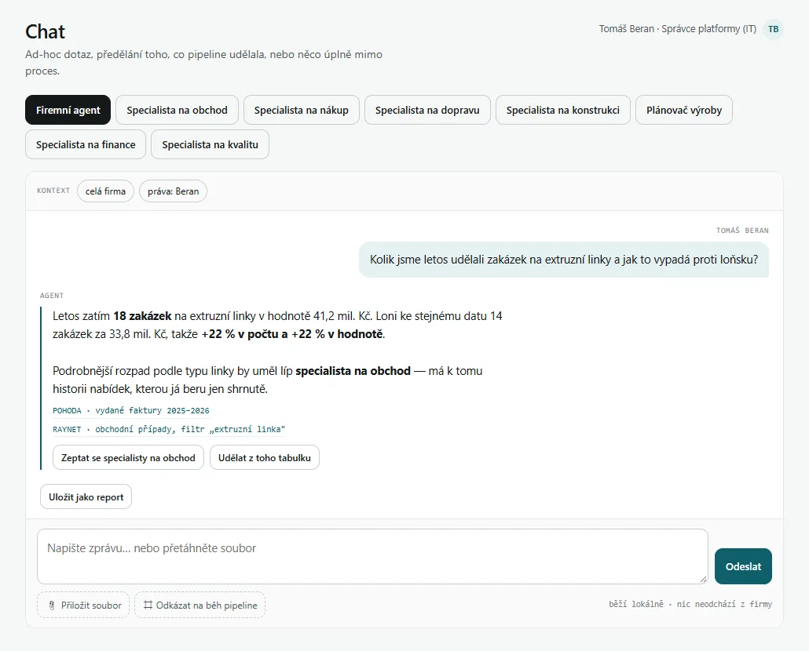
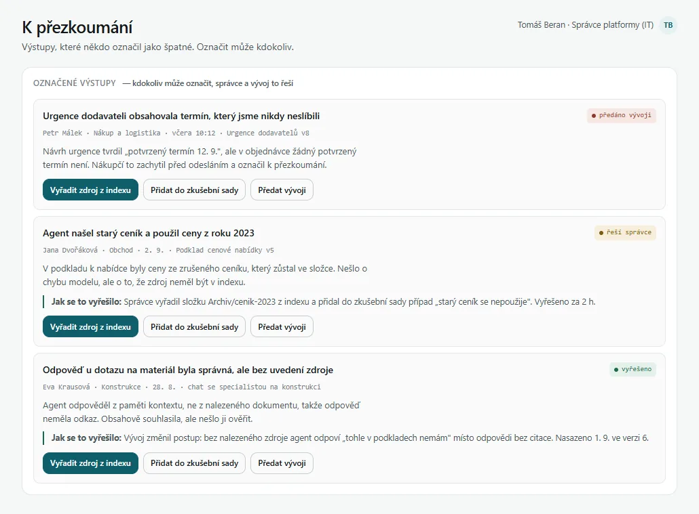

Vedení vidí, jestli se věci dějí včas
Hlavní číslo pro vedení je průtok: jak rychle firmou projde poptávka, nabídka, objednávka a faktura a na kom se čeká. Kolik lidé používají AI, je až druhá vrstva.
- Na kom co visí. Každá věc po termínu má jméno a počet dní.
- Z prvních ukázek. Na ukázkách prototypu chtělo vedení firem vidět tohle jako první, proto je přehled postavený kolem průtoku.


Model i data zůstávají u vás
Lokální znamená, že model je váš a dotazy nejdou k cizí AI službě. Kde stroj stojí, vyberete podle rozpočtu a později to jde změnit.
- U vás ve firmě. Stroj koupíte jednou a k práci s vašimi daty nepotřebuje internet.
- Pronajatý stroj. Vyhrazený server u českého poskytovatele, bez investice do železa.
- Cloud s grafickou kartou. Nejrychlejší start, platí se jen za běh.


Stroj připraví, člověk podepíše
Platforma čte poštu a vaše systémy a připraví koncept odpovědi, urgenci dodavateli nebo zápis ceny. Ven nic neodejde, dokud to člověk nepotvrdí svým jménem.
- Koncept odpovědi čeká v Outlooku ve složce Koncepty, zápis ceny v CRM. Potvrdíte, upravíte nebo zamítnete jedním klikem.
- Nic nezapadne. Po 24 hodinách přijde připomenutí, po 48 věc přejde na zástupce. Nad 100 tisíc schvaluje jednatel.


Odpovídá z vašich dokumentů a ukáže zdroj
Platforma hledá ve výkresech, nabídkách, cenících a fakturách. U každé odpovědi je vidět, odkud ji vzala, a když zdroj nenajde, řekne to.
- Jen to, co smí. Hledá v dokumentech, které smí otevřít ten, kdo se ptá.
- Specialisté na agendy. Obchod, nákup, konstrukce nebo finance, každý se svými zdroji.
- Čísla ze zdroje. Rozměry, čísla výkresů a ceny bere přesně z dokumentu, nedopočítává je.


Špatnou odpověď označí kdokoliv jedním tlačítkem
Zaměstnanec, vedoucí i jednatel to udělá přímo u výstupu, bez formuláře. Správce pak opraví zdroj nebo oprávnění, ze kterého chyba vznikla.
- Oprava u příčiny. Když agent sáhl po starém ceníku, vyřadí se ze zdrojů celý ceník.
- Zkušební sada. Opravený případ se do ní přidá a zkouší se znovu i po výměně modelu.


Jak začít a kolik to stojí
Cena projektu záleží na tom, kolik máte systémů a agend. Pevnou cenu dostanete dřív, než se cokoliv staví.
Ukázka, 25 minut online
Projdeme prototyp nad agendami vaší firmy: co by AI dělala jako první a kdo co smí vidět.
AI plán do 48 hodin
Z plánu vyjde rozsah a pevná cena projektu. Plán je použitelný, i kdybyste stavěli s někým jiným.
Projekt za pevnou cenu
Napojení na vaše systémy, práva podle vašeho seznamu účtů, zaškolení lidí a první měsíc pod dohledem.
Řád ceny železa je orientační k červnu 2026 a mění se s trhem grafických karet; konkrétní stroj vyberu podle agendy. Nejsem plátce DPH, ceny jsou konečné.
Časté otázky
Co je lokální podniková AI?
Jazykový model a agenti, kteří běží na stroji vaší firmy nebo na stroji pronajatém jen pro vás. Pracují s poštou, CRM, účetnictvím a dokumenty, připravují rutinní práci a odpovídají na dotazy. Každý člověk v nich vidí jen to, co smí otevřít ve zdrojových systémech.
Běží to už někde?
Ne. Prototyp ukazuje, jak bude platforma vypadat a jak se v ní pracuje. Hledám první firmy, se kterými ji rozjedu. Firma i data v ukázce jsou vymyšlená.
Proč lokální?
Dotaz nad smlouvou nebo výkresem zůstane ve vašem okruhu. Model běží na stroji, který je váš nebo pronajatý jen pro vás, a cena provozu nezávisí na počtu dotazů.
Jak platforma pozná, kdo co smí vidět?
Práva přebírá ze zdroje: ze skupin v Microsoft 365, z práv ke složkám a z rolí v CRM a účetnictví. Vlastní seznam práv nevymýšlí, takže když člověku právo odeberete ve zdroji, při další synchronizaci zmizí i v platformě.
Už máme vlastní lokální chat. Proč ještě platformu?
Chat nad modelem je dobrý začátek. Platforma k němu přidá práva na dokumentech, postupy, které práci připraví samy, a přehled pro vedení. Pokud se váš model hodí, může zůstat.
Na jaké systémy se napojí?
Na ty, které máte. Prototyp počítá s RAYNET, HubSpot, Pipedrive, Salesforce, POHODA, HELIOS, ABRA, SAP Business One, iDoklad, Fakturoid a Microsoft 365. Jiný systém se napojí stejně, standardním rozhraním.
Jaký model a s jakou licencí?
Model vybíráme podle agendy, jazyka dokumentů a licence, kterou váš obor dovoluje. Běží na vašem stroji, takže ho jde později vyměnit, aniž by se měnily postupy a práva.
Kolik stojí provoz?
Měsíční dohled podle počtu agend a systémů, bez položky za dotaz a za uživatele. K tomu buď vlastní server s grafickou kartou, řádově od 80 000 Kč jednorázově, nebo cloudová podoba v jedné měsíční položce.
Musíme mít připravená data?
Nemusíte. Když připravená nejsou, začíná se Přípravou firmy: dva týdny za 39 000 Kč. Jestli je potřeba, řekne AI plán.
Dá se na to získat dotace?
Někdy ano. Server, software i zavedení bývají způsobilým výdajem například v krajských voucherech nebo ve výzvách OP TAK. Jestli to jde u vás, ověříme v AI plánu.
Přístup do ukázky
Postavil jsem celé rozhraní, včetně toho, jak to vypadá pro zaměstnance, správce i majitele. Hledám první firmy, se kterými to rozjedu. Napište mi, o co vám jde, a pošlu vám přístup do ukázky.

Petr Kokoška, Manta IT. Deset let jsem stavěl systémy pro velké značky. Teď je stavím pro firmy, které vlastní IT oddělení nemají.
Firma v ukázce je modelová, čísla v rozhraní jsou vymyšlená. Manta IT, Petr Kokoška.